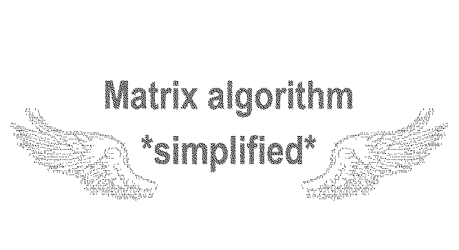
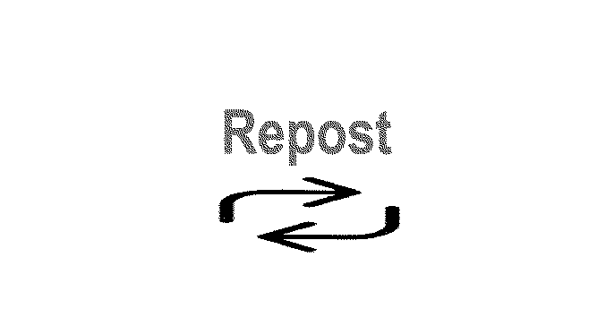
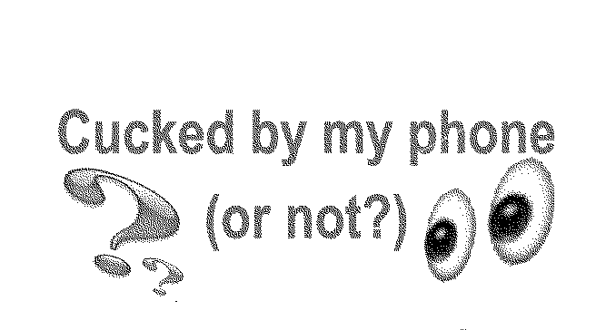

⋆♱⋆
⋆♱⋆
God we’re desperate for hope. Well girl it's 9:44 right now so that HAS to be a sign right ?? I was eating grapes and there were two left that were the same size and I went “I wonder what that means.” No because every little thing is a sign… this is so important. Those delusions of reference have me in a GRIP sometimes. It’s so much more fun. I went through a year of this and it genuinely rewired my brain in a positive way like yes I was lowkey going through psychosis and I had to throw away all my journals from that time because it actually looked really scary but it made me extremely self confident so idk maybe it’s a good thing. I will be as famous as Elton John. I’m right where I’m meant to be. Is this real or am I losing it. Unclaim negative energy, claim positive energy. The one time I see most commonly is 11:11 so you can imagine how difficult it is for me to descend to the plane of reality… I'll have what she’s having! Ahhh so the universe is like the tiktok fyp, u not gonna like every video but it was part of the algorithm u generated. My friend thinks about it as designing your instagram explore page – what you interact with is what you’ll get more of! The universe is TikTok now. Dream - visualise - create… YES
THANK YOU FOR ADVICE.
THANK YOU UNIVERSE.
Not me 1 minute ago thinking my life works just like an algorithm. This is so meta. I love how technology can help us understand manifestation. Changing my TikTok algorithm taught me how to change my life. So quite literally it's about the vibes u give off to yourself? If my real life algorithm was as good as my TikTok algorithm I think I wouldn’t be depressed. I always thought social media (interconnected web of everyone) was symbolic of the collective consciousness. Hidden in plain sight. I think the internet is a scaffold for us as humans on earth to learn to use telepathy and to see past the limitations put on our senses. Totally!! So many times I open tiktok and get questions answered. Or my thoughts reflected back to me. Etc. So cool.
My attention span is struggling as much as I wanted to hear it all. Can you tell us how to rewire our brain and belief so we don’t follow Murphy's law or manifesting things out of fear please. Algorithms are smarter than the universe. The universe is indifferent to our existence and operates irrespective of it. We superimpose meaning onto it. Software developers have been trying to model the universe in technology for ever… each new app and each new iteration we get closer and closer. “Suffer the consequences”... this is so fake. Guys don’t fall for this, these videos don’t work and nothing bad will happen to y’all. Bro stop these are all over my fyp idc. Can ppl not see this is fake and prob for clout? Unclaiming all bad energy! Claiming good energy. Claim x 4. Claim with good energy only.

⋆♱⋆
⋆♱⋆
The relationship between emerging technology and folklore reveals a recurring pattern: every new form of media reshapes how belief travels. What once moved slowly through proximate communities, then spread through images and print now moves through algorithms. Each stage does not replace the previous one but it amplifies it. This essay is exploring ways in which social media algorithms function as a modern form of folklore.
How can an image take on a life of its own? The image taken of “The Loch Ness Monster” by Doctor Robert Wilson in April 1934 garnered global attention after being published in the Daily Mail. The same story was repeated internationally, using headlines such as “London Surgeon’ s Photo of the Monster.” By presenting the photographer as a respectable doctor, credibility was added to the story. The photo sparked an international sensation, with the circulation of the image turning the story from a local legend into a global myth. Of course, people were sceptical but still took it seriously as photographs were still associated with truth and scientific proof. All of the ingredients were there to make this story convincing. People didn’t believe it because they had seen the monster. They believed because they saw the same image as everyone else. It wasn’t until decades later that the photo was confirmed to be a hoax when, in the 1990s, Christian Spurling, who had helped to make the image, admitted that it had all been staged.
When thinking of contemporary folklore as a source of comfort or escapism, not simply as a lens through which we understand reality, the addition of image circulation becomes a key aspect. Media theorist Marshall McLuhan’s idea of the global village helps explain why the Surgeon’s photo became so powerful. He argued that electronic media would collapse distance and allow people across the world to react to the same images at the same time, creating a shared emotional environment similar to that of a small village. The photograph transformed a local legend into a global belief by placing millions of people inside the same mediated reality. That being said, this example existed in a slower version of the instant global village in which we now exist, with the folklore expanding over weeks and months rather than hours.
Explanation doesn't always make the story more clear, rather voices are amplified and repeated until scripts become truths. The Loch Ness photograph shows how a single circulating image transformed local folklore into global belief, while contemporary algorithms do the same thing on a much larger scale by repeatedly showing personalised images that turn coincidence into meaning and superstition into digital folklore. Before photography, you had to hear a story to believe it. After photography, you could see the myth captured in an image, even if it wasn’t real. Now, you don’t even need a single image. Belief spreads through constant repetition and algorithmic reinforcement. Reality and images are now at odds with the proliferation of generative AI. Generated images rarely fool me, and when they do I have a feeling that I should have known better than that.
With a rotted brain and prematurely arthritic thumbs I can become anyone, go anywhere and stretch reality to my liking from the comfort of my phone. As I scroll I am uninspired by the banality of my own algorithm… is it a reflection of my ever smoothed brain? Its grooves and curves worn out through the repetition of this exact activity. The ritualistic dopamine hunt that takes place as I gamble on the FYP. The next video always carries the promise of being the funniest, most insightful or most beautiful one yet. Unfulfilled, the next video is slightly different. Instructional, but not in a “how I do my heatless curls” way. Hopeful, but not in a “Surprising my family after living in Australia for 5 years” way. Aspirational, but not in a “Spend a day with me in Bora Bora” way. This one contains a tantalisingly ambiguous promise. “Save this video for good luck. Use this sound for good luck.” Followed by a slightly ominous “do it for your own safety. ” Obviously, I don't save the video.
I scroll away... but then in the back of mind, I know you can never be too careful. I scroll back up to the video and save it. It won’t hurt me, it barely took me a second and now I can scroll in peace, having soothed that minor fear. I feel safe knowing I didn't risk “it.” But now I've taken the bait. I've shown a weakness, a lapse in the steady rhythm of my scroll by giving this post extra attention and interaction. Now the algorithm, designed to maintain my attention by learning from my behaviour and mirroring back that which, consciously or not, captivates me and the social worlds through which I move, knows of my superstitious disposition.
"Seven days of protection starts now. This is protection frequency."
The threats and promises begin to come faster now, with every few videos promising to bring me money, love, success and happiness. I grow tired and jaded. This once naive and gullible part of my brain becomes harder to reach and the promised protection from "the protection frequency" is no longer enough to convince me to interact. I don't even feel the need to like the recurring "claim for free" comments. The power which these videos once held over me has subsided. Looking back it's funny, and hard to imagine there was any sincerity in my obedience. But my tiktok drafts tell a different story. Several thirty second recordings showing me, only from my eyes up, face lit by its own reflection on the phone's screen, detail my brief belief in the mystic powers of the algorithm.
I pulled back from the edge, no longer affirming to the algo that I am susceptible to these ominous empty threats. “Suffer the consequences”... this is so fake. The feeling of the sublime refers to something so large, so powerful, or so complex that the mind cannot fully grasp it. Media theorist Vincent Mosco describes this reaction to technology as the digital sublime, arguing that people often experience digital systems not simply as tools but as powerful, almost mythological forces.This was my experience, during my fleeting power struggle with my algorithm. In his book The Digital Sublime: Myth, Power, and Cyberspace he says “Myths are not just falsehoods that can be disproved, but stories that lift us out of the banality of everyday life into the possibility of the sublime.” The internet is surrounded by “myths of cyberspace,” where technology is imagined not just as a tool but as a transformative force.

⋆♱⋆
⋆♱⋆
Historically anxiety and fear have manifested and mutated into mythical creatures, surviving through folklore. Many beliefs and traditions are constructed around universal fears: death and that which was unexplainable at the time.
The Banshee is an example of this. She is a figure in Irish folklore; a female spirit whose presence was marked by piercing, mournful scream. She would appear before a family member’s death, not causing it but symbolising it. Instead of seeing death as a natural event, fear transformed it into a supernatural warning system. The banshee embodies how communities projected their anxiety onto a figure that could be feared, respected, or appeased; turning mortality into a story with recognizable patterns.
We seek answers in order to comfort ourselves. When faced with the true lack of control we possess over reality, we place our belief in powers beyond ourselves. Shedding the responsibility, our inherent feeling of powerlessness, we replace it with faith. The ways in which we see the world are shaped through experience, culture and understanding. I believe we all contain a certain degree of superstition. Superstition is a belief or practice resulting from confusion, fear of the unknown; trust in magic or chance; assigning meaning to coincidence, reading patterns into noise, and trusting them just enough to act accordingly. Being Irish comes with an extra dose of superstition, with inherited practices that I take part in without second thought.
Obviously, I will wave at every magpie I see. When I accidentally pour too much salt into my hand when cooking, I throw it over my shoulder. I forget which shoulder it is meant to be, so I do both. No risks. You can never be too careful. The thought of walking under a ladder gives me shivers. That one feels like the biggest curse somehow. Whether I know the origins of these behaviours doesn't matter, it always comes back to the simple and ineffable argument that you can never be too careful. When looking into these superstitious behaviours, or “piseóga” in Irish, they are surrounding death or luck. Were these the pillars of life back then? Back when communities were smaller, more insular. Is this what people spent their time thinking about? Many piseóga include fairies and are instructions on how to avoid falling victim to their tricks and ill intentions. To this day I wouldn't dare enter a fairy fort. That is how you get lost. So, these beliefs in the unexplainable and their associated behaviours go way back, and though I admittedly subscribe to many of these behaviours I do not necessarily hold the beliefs to back them up, I’ve simply heard them enough that they are written into my daily behaviour.
Tommaso Venturini, a researcher at the CNRS Centre for Internet and Society, analyses primary and secondary orality in his text Online Conspiracy Theories, Digital Platforms and Secondary Orality Toward a Sociology of Online Monsters. Primary orality refers to oral communication which “precedes the introduction of alphabetic writing.” It is characterized by reliance on memory and oral transmission of knowledge. Venturini compares this with a new form of orality which he refers to as secondary orality which “is a post-literate orality produced by the advent of electronic technologies and by the way in which these technologies reverse some of the cultural dynamics introduced by writing and printing.” His concept of secondary orality helps explain how belief online is not established through evidence but through repetition, participation, and circulation. Much like oral folklore, digital content gains authority because it is encountered repeatedly within a shared, yet personalised, media environment.
McLuhan argues in Understanding Media that: “Today, after more than a century of electric technology, we have extended our central nervous system in a global embrace, abolishing both space and time as far as our planet is concerned.” This extension of our central nervous system which took place years ago has proceeded to overtake and expand all parts of ourselves, with the phone screen becoming almost portal-like, allowing us to change our identities, shift to alternative or fictitious realities, see across space and time and form neverending connections.
"I love my iPhone and I don't feel ashamed about it. In Mesopotamia, someone would just be on their slab all day. I feel like that would be me."
I found that quote on my instagram explore page. Last week my average screen time was 10 hours 5 minutes a day. Not so bad tbh, I've had much worse. I saw my friends last night. We spoke about this. About how even though this is a pretty “appallingly high” screen time I don't feel cucked by it. I’m neither a victim or master of my algorithms. Instead, I exist in a perpetual feedback loop with them. The phone is both a lens and a mirror, reflecting desires, anxieties, and patterns. Life goes on and sometimes I view life from behind a phone and that doesn’t always bother me. That was just this week's average, and like I said I've seen worse. I've been quite online for quite some time. It can be hard to unravel oneself from the “perfect mirror” of my algorithms. Algorithms which have seen me through years of scrolling. They know me better than I know myself sometimes. I could even see them as a constructive force for reality. All seeing, all knowing. Always listening and monitoring. Silently (judging), rewarding, punishing. Encouraging, guiding, suggesting. FYP. All for me. All for you. To be seen is to be loved. To be known and understood.
The internet has gone past influencing our behaviour and has fully integrated with our minds and how we view reality. Cultural theorist Valentina Tanni identifies this shift as a turn toward affect, where digital media prioritises sensation and emotional response over information. In her book Exit Reality – Vaporwave, Backrooms, Weirdcore, and Other Landscapes Beyond the Threshold Tanni writes about the rise in importance placed on physical sensations, emotional states and “vibes.” We take in so much information as we scroll. But also almost nothing at all. The colours and shapes made up of pixels barely penetrate my glazed over eyes as my algorithm presents me with a video of an influencer telling her audience she is getting a divorce, a video of humanoid fruits cheating on each other, clearly made with AI, and a Wingstop mukbang. The sounds and captions often make little to no impact. What I do glean from each swipe is a brief emotional trigger. The endless streams of media are no longer just tools for communication but instruments for emotional regulation, hypnosis and self-belief. As people become more fluent in digital tools and more comfortable manipulating images, sounds and identities, a culture emerges that is less interested in truth than in how something feels. What matters is not whether something is accurate but whether it produces a reaction. That's the vibe economy.
Tanni sums it up as such “In short: feelings are instantaneous, authentic, and personal, and they are indisputable. But they are also mysterious, fleeting, and hard to put into words. In the age of information overload and endemic depression, the aim is to learn to evoke, accentuate, or silence them.”
Internet art collective Remilia propagates the idea of networked spirituality; a manifestation of the digital sublime, a culmination of the desires and hopes expressed by millions online. The fractured voices of the global village speaking in unison, placing faith in the opaque systems which seem to shape our realities as much as we shape their output. Writer Charlotte Fang compiled the scattered definitions of “networked spirituality” in her article Network Spirituality, Collected Commentary.
In 5 years, "network spirituality" will be an accepted concept as we continue to integrate these technologies more deeply into our lives and we increasingly realize we need something ; religion to navigate the cultural maelstrom of the internet. Network spirituality is a force that takes us back to our earliest dreams and memories, begging the question whether that desire to be divine is what makes us so human or the other way around.
With truth in flux, seemingly influenced by the hyperspecificity of our personal algorithms, it is no surprise that people take this idea of truth beyond the phone, out into the real world. Allowing the digital sublime, the mystique of the algorithm to be their tether to reality. As people would funnel their fear or confusion into superstitious practices in the past, which circulated and survived as folklore, we now ground ourselves by placing belief in the very thing that contributes to our collective anxieties.
The universe is TikTok now. Dream - visualise - create… YES